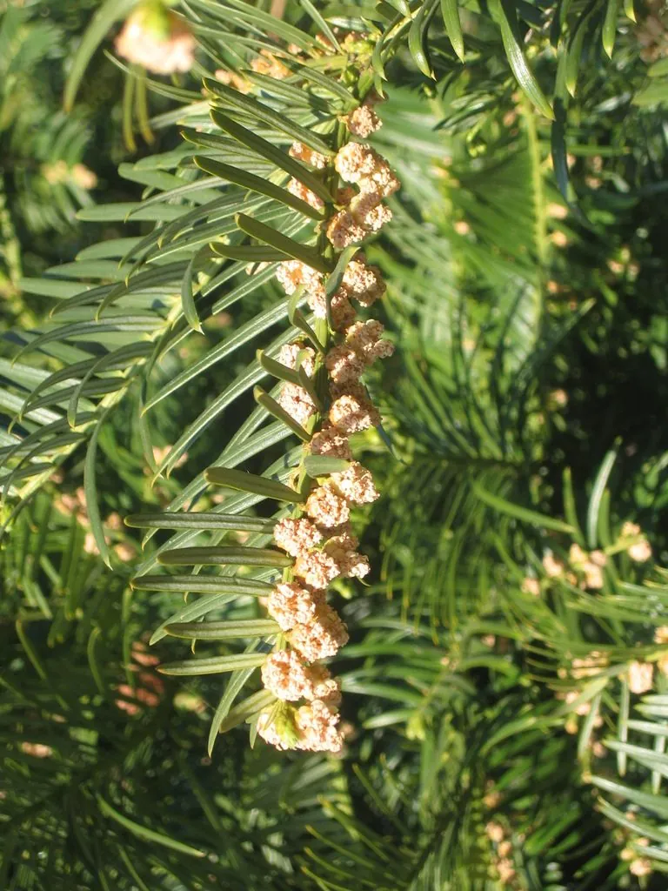

蕨类与裸子植物 · 植物界
三尖杉 Cephalotaxus fortunei

三尖杉的枝叶含三尖杉酯碱，可用于提取抗癌药物，是重要的药用裸子植物，但全株有毒，不可食用。
- 分类
- 门裸子植物门纲松纲目柏目科三尖杉科属三尖杉属
- 栖息环境
- 海拔 300–2000 m 的山谷溪边与林下，喜温暖湿润半阴
- 地理分布
- 中国长江流域及以南多省区，陕西南部也有分布
- 保护级别
- 暂无评估；野生资源因药用采挖下降
物种志
三尖杉是三尖杉科三尖杉属常绿乔木，高可达 20 m，树皮红褐色、呈片状剥落。叶片条形，稍弯，长 4–10 cm，螺旋状排列成两列，表面深绿色，有光泽，叶背有两条白色气孔带。雌雄异株，雄球花聚生成头状，雌球花单生。种子核果状，卵圆形，成熟时紫红色或紫色，外被肉质假种皮。
三尖杉是中国特有的树种，分布于浙江、安徽、福建、江西、湖南、湖北、四川、云南、贵州、广西、广东等地的山地，喜温暖湿润、半阴的环境，多生于山谷溪边与林下。它生长较慢，树姿优美，可作园林树种。三尖杉的枝叶和树皮中含有三尖杉酯碱、高三尖杉酯碱等生物碱，是治疗某些白血病的药物原料，具有重要药用价值；但全株有毒，误食会引起中毒。由于药用采挖，野生资源需要保护。
形态与习性
- 树高可达 20 m
- 叶条形稍弯，排成两列
- 种子核果状，成熟时紫红色
- 药用含三尖杉酯碱等生物碱
- 毒性全株有毒，不可食用
- 习性耐阴，多生于山谷林下
趣味知识
- 三尖杉含三尖杉酯碱，是提取抗癌药物的原料。
- 它的种子成熟时像红色的小果子，但全株有毒，不能食用。
- 三尖杉是中国特有树种，因药用采挖，野生资源需要保护。